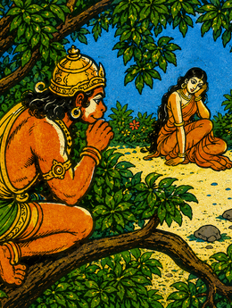
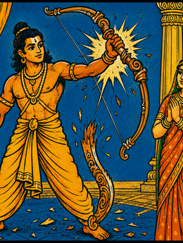
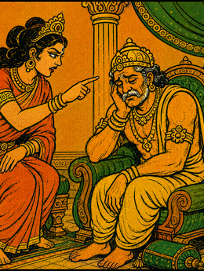
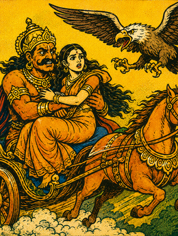
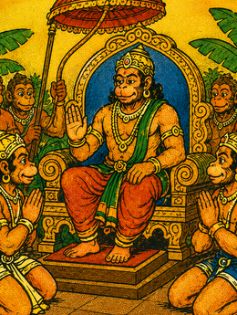
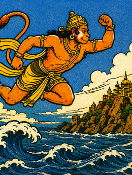
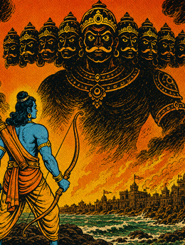

Избранные книги великого эпоса
Полный список русских версий: от академических трудов до популярных пересказов.
Открыть каталог текстов →От академических начал Павла Гринцера до современного продолжения Максима Леонова.
Узнать больше о проекте →Ключевые даты: от аудиокниги 1986 года до планов на 2029 год.
Смотреть хронологию →Герои эпоса и связи между ними: семья, союзы и вражда — со ссылками на Викиданные.
Карта связей →Семь книг Рамаяны: краткое содержание каждой канды, число глав и древнее ядро поэмы.
Семь книг →История русских переводов и пересказов: от санскритологов XIX века до академической линии «Литературных памятников».
Читать очерк →Северная и южная редакции, вульгата и критическое издание Бароды — и что означают канонические ссылки на сайте.
О тексте →Как звучит Рамаяна? Сравните санскрит, подстрочник и поэтический перевод.
Все эпизоды →Аудиокниги, интервью с переводчиком и видеодоклады о Рамаяне.
Открыть медиа-галерею →Рабочие материалы Книг V и VI: подстрочники и черновые переводы для подписчиков.
Открыть черновики (подписчикам) →Прозрачность превыше всего: ежемесячные отчёты о поступлениях и расходах.
Смотреть отчёты →Полный список русских изданий Рамаяны: от опубликованных книг до готовящихся томов.
Открыть библиографию →Полная аудиокнига «Рамаяна» 1986 года: все семь книг в исполнении Евгения Кривецкого.
Слушать аудиокнигу →Аудиокнига · Рамаяна 1986

Вступление
Рамаяна — одна из двух великих санскритских эпопей Древней Индии, сложенная мудрецом Вальмики. Перевод выполнен по изданию 1986 года и представляет избранные книги этого бессмертного памятника.

Бала-канда
Рождение царевича Рамы в солнечной Айодхье, его юность среди богатырей и мудрецов, первые подвиги и победа над демоническими силами, нарушавшими священные жертвоприношения.

Айодхья-канда
Интриги дворца и изгнание Рамы в лес на четырнадцать лет. Верная Сита и преданный брат Лакшмана разделяют его участь. Горе царя Дашаратхи и смятение великого города.

Аранья-канда
Скитания в дремучих лесах, встречи с отшельниками и чудовищами. Коварный Равана похищает Ситу, обернувшись золотым оленем. Начало великого похода за любовью и справедливостью.

Кишкиндха-канда
Союз с царём обезьян Сугривой и великим Хануманом. Собирается несметное войско из лесных существ. Поиски Ситы на всех концах земли и ободряющая весть верного Ханумана.

Сундара-канда
Перелёт Ханумана через океан на остров Ланку. Тайное свидание с пленной Ситой, разведка вражеской твердыни и огненное разрушение города. Возвращение с радостной вестью.

Юддха-канда
Великий поход через океан, возведение моста из камней и деревьев. Грандиозная битва с ракшасами, гибель Раваны и торжество дхармы. Воссоединение Рамы и Ситы.
Уттара-канда
Возвращение в Айодхью и торжественное воцарение. Правление Рамы — эпоха справедливости, покоя и процветания. Завершение земного пути героя и его уход в вечность.
Хронология событий
Бала-канда · Книга I
Царь Айодхьи Дашаратха совершает жертвоприношение и получает четырёх сыновей. Рама с братом Лакшманой уходит с мудрецом Вишвамитрой — истреблять демонов, нарушающих священные обряды. Первые подвиги, победа над Тарикой, знакомство с великим луком Шивы.
Бала-канда · Книга I
В городе Митхила царь Джанака устраивает состязание: кто натянет лук Шивы — получит руку его дочери Ситы. Рама не только натягивает, но и переламывает лук. Четыре брата женятся на четырёх дочерях царского рода.
Айодхья-канда · Книга II
Накануне коронации Рамы царица Кайкейи требует от Дашаратхи исполнить два давних обещания: возвести на трон её сына Бхарату, а Раму отправить в лес на четырнадцать лет. Рама принимает приговор без гнева. Дашаратха умирает от горя.
Аранья-канда · Книга III
В лесу Дандака демон Шурпанакха влюбляется в Раму и получает отказ; Лакшмана отрезает ей нос. В отместку её брат Равана — десятиголовый владыка Ланки — похищает Ситу, обернувшись золотым оленем. Орёл Джатаюс пытается её защитить, но гибнет.
Кишкиндха-канда · Книга IV
Рама помогает Сугриве вернуть трон обезьяньего царства Кишкиндхи, убив его брата-узурпатора Валина. В ответ Сугрива снаряжает несметное войско на поиски Ситы. Хануман переносится через океан на остров Ланку.
Сундара-канда · Книга V
Хануман находит Ситу в саду Ашока, передаёт ей перстень Рамы и выслушивает ответное послание. Схваченный ракшасами, он поджигает хвостом полгорода и возвращается с вестью: Сита жива.
Юддха-канда · Книга VI
Войско обезьян возводит через океан мост из скал и деревьев. Начинается великая битва. Погибают лучшие ракшасы, сын Раваны Индраджит, наконец — сам Равана. Сита проходит испытание огнём, доказывая свою верность.
Уттара-канда · Книга VII
Рама и Сита возвращаются в Айодхью. Наступает эпоха Рама-раджья — царствование справедливости и благоденствия. Но клевета подданных вынуждает изгнать Ситу. Уже в старости Рама входит в воды Сарайю и уходит в вечность.
Карта путешествия
Путь Рамы
Маршрут охватывает север Индии, леса Декана и остров Ланку.
Параллельный корпус · Читать текст
Тот же круг учёных, что создал аудиокнигу, готовит академические переводы Рамаяны с параллельным санскритским текстом.
Также в нашем корпусе доступен полный поэтический перевод Веры Потаповой.
Перевод П.А. Гринцера, 2006
Айодхья-канда · Книга об Айодхье
Перевод П.А. Гринцера, 2006
Перевод П.А. Гринцера, 2014
Кишкиндха-канда · Книга о Кишкиндхе
Перевод С.Д. Серебряного (в печати, 2025)
Сундара-канда · Книга о прекрасном
Подстрочник М.В. Леонова (черновик)
Юддха-канда · Книга о битве
Перевод М.В. Леонова (продолжается)